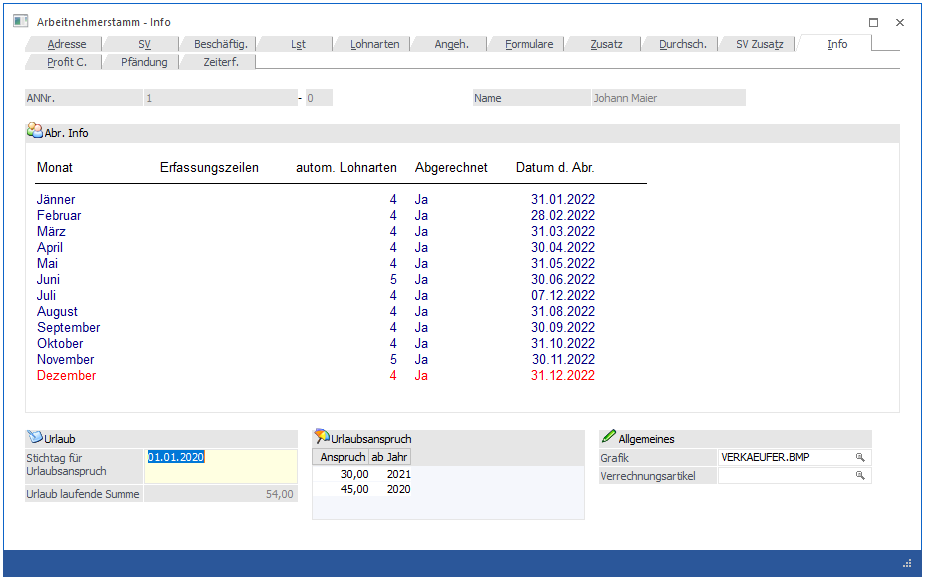

In diesem Fenster, das über den Menüpunkt
1 Stammdaten
1 Arbeitnehmer
1 Arbeitnehmerstamm
oder Schnellaufruf
1 STRG + A
1 Register Arbeitnehmerstamm - Info
aufgerufen wird, wird angezeigt, wann der AN mit wie vielen Abrechnungszeilen abgerechnet wurden.

Informationen
Ø Erfassungszeilen
Hier wird angezeigt, wie viele Erfassungszeilen für diesen AN im jeweiligen Monat vorhanden sind.
Ø Autom. Lohnarten
Hier wird angezeigt, wie viele automatische Lohnarten aktuell im AN hinterlegt sind.
Ø Abgerechnet
Hier wird angezeigt, ob der AN im jeweiligen Monat abgerechnet wurde oder nicht.
Ø Datum d. Abr.
Hier wird angezeigt, wann die Abrechnung im entsprechenden Monat durchgeführt wurde.
Das aktuelle Abrechnungsmonat wird immer in ROT dargestellt.
Durch Anklicken des Lohnkonto-Buttons wird das Jahreslohnkonto des AN angezeigt (siehe auch Kapitel Lohnkonto).
Durch Anklicken des Erfassung-Buttons wird das Erfassungsprotokoll der letzten Abrechnung dieses AN angezeigt (siehe auch Kapitel Erfassungsprotokoll).
Allgemeines
Ø Stichtag für Urlaubsanspruch:
Hier wird der Stichtag für die Urlaubsberechnung hinterlegt, wobei bei einer Neuanlage eines AN das Datum abhängig von der Einstellung im Betriebsdatenstamm vorgeschlagen wird. Das Datum kann indiv. abgeändert werden.
Ø Url. lfdn Summe
Hier wird die Summe der verbliebenen Urlaubstage angezeigt, die sich aus dem Urlaubsanspruch abzüglich der verbrauchten Urlaubstage (lt. Fehlzeitenverwaltung) ergeben. Bei der Berechnung der laufenden Summe wird auch der Stichtag für neuen Urlaubsanspruch berücksichtigt.
Ø Anspruch
Hier wird der aktuelle Urlaubsanspruch des AN hinterlegt, wobei der Anspruch in einer Tabelle verwaltet werden kann. In dieser Tabelle können folgende Informationen eingegeben werden:
Ø Anspruch
Anzahl der Urlaubstage, auf die der AN Anspruch hat.
Ø ab Jahr
Hinterlegung des Jahres, ab dem der Anspruch gültig ist.
Im Normalfall werden in dieser Tabelle immer nur ein bis zwei Einträge vorhanden sein. Diese Liste wird erst dann erweitert, wenn der AN z.B. aufgrund seiner Firmenzugehörigkeit Anspruch auf mehr Urlaub erhält. Bei der Neuanlage eines AN wird der Anspruch von 25 Tagen mit dem aktuellen Abrechnungsjahr automatisch vorgeschlagen.
Wenn die Urlaubsberechnung neu gestartet wird, kann der Resturlaub aus einem Vorjahr auch entsprechend verwaltet werden. Dazu muss der Urlaubsstichtag in das Vorjahr verlegt werden, der Resturlaub wird dann auch entsprechend mit dem Vorjahr eingetragen.
Beispiel:
Die Urlaubsverwaltung soll mit 1. Januar 2021 begonnen werden. Der AN/MA ist aber schon länger in der Firma beschäftigt und hat daher noch einen Resturlaub aus 2020 von 7 Tagen. Basis für die Berechnung des Urlaubs in dem Beispiel ist das Kalenderjahr.
Lösung:
Als Stichtag für den Urlaubsanspruch wird der 1.1.2020 eingetragen. Für das Jahr 2020 werden demnach in der Tabelle für den Urlaubsanspruch 7 Resturlaubstage hinterlegt, dazu kommen ab dem Jahr 2021 jeweils 25 Tage hinzu. Da ergibt für das Jahr 2021 einen Urlaubsanspruch von 32 Tagen.
Ø Grafik:
Sofern vorhanden, kann in diesem Feld eine Grafikdatei, die z.B. den AN zeigt, hinterlegt werden. Durch Drücken der F9-Taste kann nach allen Grafikdateien, die die WinLine unterstützt, gesucht werden, wobei hier sowohl Grafiken verwendet werden können, die in der WinLine-Datenbank gespeichert sind, als auch Grafiken, die sich irgendwo auf einer Festplatte befinden.
Ø Arbeitnehmergruppe
Durch Anklicken des Buttons kann dem AN eine Arbeitnehmergruppe hinterlegt werden. Ist bereits eine Arbeitnehmergruppe hinterlegt, wird die Bezeichnung der Gruppe am Button angezeigt. Die Arbeitnehmergruppen können über den Menüpunkt Stammdaten/Arbeitnehmer/Arbeitnehmergruppen angelegt werden.
Ø Verrechnungsartikel
In diesem Feld kann ein Verrechnungsartikel hinterlegt werden, wobei über die Matchcodefunktion (F9-Taste) nach allen bereits angelegten Artikeln gesucht werden kann. Der Verrechnungsartikel wird in weiterer Folge bei der Projektzeiterfassung, die in der WinLine FAKT über den Menüpunkt Erfassen / Projektverwaltung / Zeiterfassung aufgerufen werden kann, automatisch als Artikel in die Erfassungszeile übernommen.